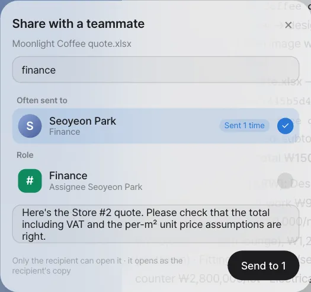
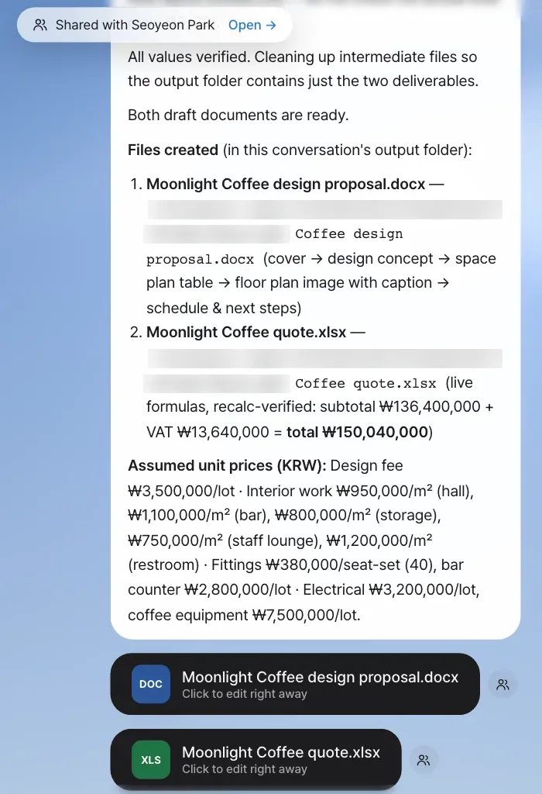
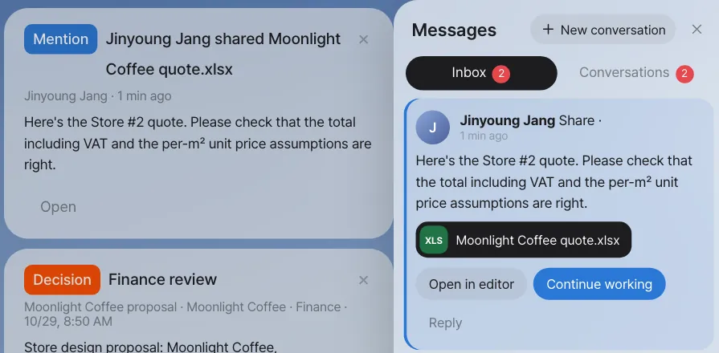
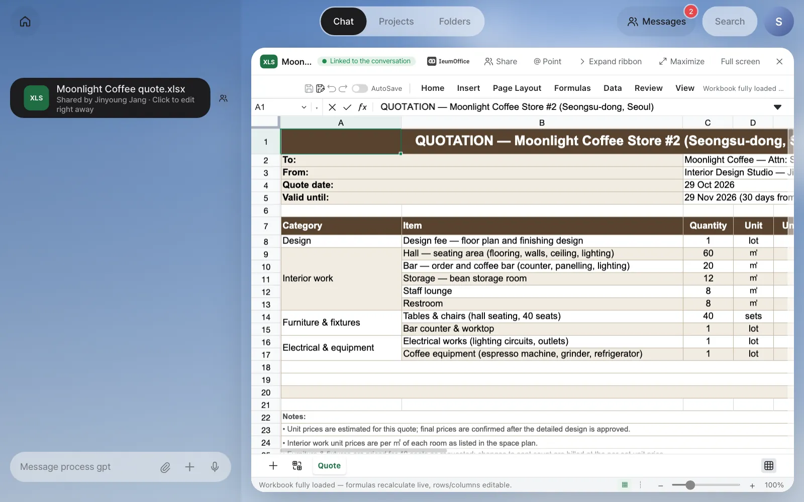
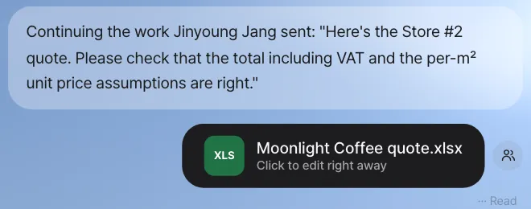
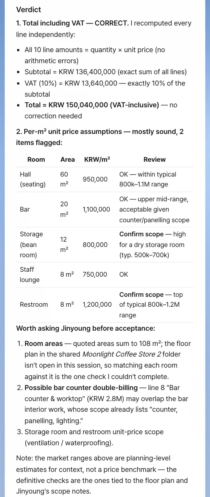
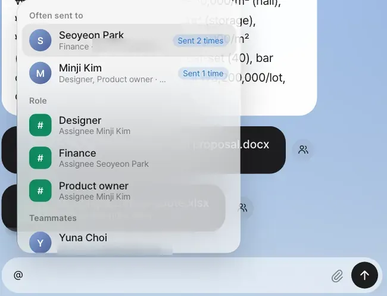
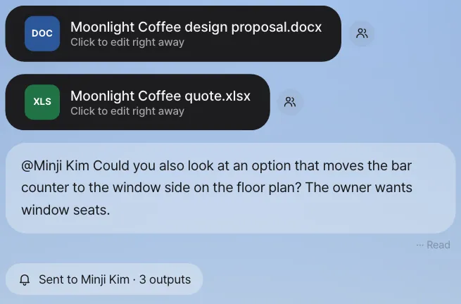

Share the quote the assistant made with Seoyeon Park, and Seoyeon Park clicks Continue working in her inbox to have her own assistant review it. When you type @ in the chat input box, the teammates and roles you've handed work to most often come up first.
Why "share" instead of "send a file"#
In Chapter 13, you gathered one customer's materials in a shared folder. But you don't need to make a folder every time you want a teammate to take a quick look at one file. The quote you made in Chapter 9 is in team lead Jinyoung Jang's chat. Seoyeon Park in finance needs to look at the numbers, but if you download the file and email it, three things break.
- You lose control over who can see it. Anyone who knows the file's address can open it.
- It gets confusing which version Seoyeon Park's edits are in.
- Seoyeon Park's assistant doesn't know the context. You have to explain it again.
Here's how sharing works in Lite.
| When you share | |
|---|---|
| Recipient | Only teammates (or roles). Each recipient gets a separate permission, and the server checks it every time the file is opened |
| Original | The sender's original storage address never leaves |
| How it opens | The recipient opens their own copy. Even if they edit it, the sender's original stays the same |
| Notification | It shows in the inbox, as a Home card, and as a number on Messages at the top |
| Continue | When the recipient clicks Continue working, the note, the conversation excerpt and the copy go to their assistant |
| Cancel | Only the sender can take back a share |
The share button is in three places: next to a file card in the chat, on each file when you expand a conversation's output stack (Chapter 4), and Share in the header of an open editor. Wherever you click it, the same window opens.
Try it 1 — share the quote with Seoyeon Park#
Do this from team lead Jinyoung Jang's account.
- In the chat, click the person-shaped button next to the quote's file card (in our run the draft from Chapter 9 was named
Moonlight Coffee quote.xlsx). The Share with a teammate window opens. - Type
financein the search box. It searches by name, email and role. - Pick Seoyeon Park (Finance) under Often sent to. You can also pick
Financeunder Role. If you send to a role, it goes to whoever has that role. - Write a note:
Here's the Store #2 quote. Please check that the total including VAT and the per-㎡ unit price assumptions are right. - Click Send to 1.

Check: "Shared with Seoyeon Park · Open →" briefly appears at the top of the screen.

If the teammate list is long
In the current version, the "team" is everyone who has signed in to Lite on the same install, so if there are many people, type a name or role in the search box to pick. An admin sets roles in Settings › Team & roles (Chapter 18).
Try it 2 — the recipient: the inbox#
Log in as Seoyeon Park. At the top of Home there's a card about the share ("Jinyoung Jang shared Moonlight Coffee quote.xlsx"; in the current English version its label reads Mention), and Messages at the top has a number on it. Click Messages to open the Inbox.

Each share in the inbox has three buttons.
| Button | What it does |
|---|---|
| Open in editor | Opens your copy in IeumOffice. The same copy card also appears in Seoyeon Park's chat |
| Continue working | Your assistant receives the note, the conversation excerpt and the copy, and starts working |
| Reply | Goes to the one-on-one room with team lead Jinyoung Jang (Chapter 15) |

Try it 3 — Continue working: your assistant reviews it#
Seoyeon Park clicks Continue working in her inbox. The following appear in Seoyeon Park's chat, in order:
- The copy's file card ("Shared by Jinyoung Jang")
- "Continuing the work Jinyoung Jang sent: "Here's the Store #2 quote. …""
- The assistant's progress indicator (Working), and then the review result


Check
- The review is done with Seoyeon Park's account and assistant. Nothing appears in team lead Jinyoung Jang's conversation.
- If the assistant edited the copy, that's Seoyeon Park's copy. Team lead Jinyoung Jang's original quote stays the same. To send the edited version back, Share it again from that file card.
The review wording differs from run to run. It's fine as long as you get comments on the total (subtotal + 10% VAT) and the assumed unit prices. In our run it took about 15 minutes on a busy server, and file cards appeared along with it: the copy with a new Verification sheet (Moonlight Coffee Store 2 quote.xlsx), plus a report and a summary deck the assistant decided to make on its own (… quote verification report.docx / .pdf, … quote verification summary.pptx).
Files the assistant refers to
The assistant in Continue working is set to look for its sources in your attachments, shares you received, this conversation's folder, and shared folders you're a member of, and it puts new files in this conversation's folder. Files other people made don't get attached to your conversation as cards either. Keep materials that only teammates should see in a shared folder with set members (Chapter 13), not as chat attachments. What operators should know is in Chapter 25.
You can hand off other work while it reviews
While the assistant reviews, you can send another Continue working or chat request without interrupting the review in progress. Requests to the same conversation show as Waiting and are handled after the earlier work finishes, and work in other conversations runs side by side (Chapter 3).
Try it 4 — hand work over with an @mention in chat#
Sharing means "handing over a file," and an @mention means "handing this conversation's work to a person." Type @ in team lead Jinyoung Jang's chat input box.

The suggestions come in this order.
- Often sent to — teammates you've recently shared with, mentioned or talked with often ("Sent 2 times" for Seoyeon Park in our run)
- Related — if there's conversation context, teammates the routing model (Chapter 4) considers related to this work (for example "Related 72%"; in our run this section didn't appear). Without a routing model, this section is empty
- Role — if you send to a role like
#Finance, it goes to whoever currently has that role - Teammates — everyone else
Pick Minji Kim, and a recipient chip appears above the input box. Then write your request and send it.
@Minji Kim Could you also look at an option that moves the bar counter to the window side on the floor plan? The owner wants window seats.

Check: Your chat keeps a "Sent to Minji Kim · 3 outputs" chip, and a mention ("Jinyoung Jang mentioned you") goes to Minji Kim's inbox and Home along with the conversation excerpt and this conversation's recent outputs (in our run, the floor plan, proposal and quote drafts). Minji Kim can also hand it to her own assistant with Continue working.
With a recipient chip, the assistant doesn't answer
A message where you picked a person with @ goes only to that person. To have the assistant do the same work too, remove the chip and send.
Next#
As shares and mentions go back and forth, one-on-one rooms appear on their own. In the next chapter, teammates talk in a room, and the room helper turns a request in the conversation straight into work (Chapter 15).
Check your understanding
- From Seoyeon Park's account, open the quote copy in the editor, change one number in the total cell, and save. When you open the original quote from team lead Jinyoung Jang's account, has the number changed?
- From team lead Jinyoung Jang's account, who receives the quote if you share it to the
Financerole under Role? What happens if you change the owner in Settings › Team & roles and send it again? - What decides the order of Often sent to in the @ suggestions?
Answer
- No. What Seoyeon Park opened is her own copy, and saving also goes to her card. To send it back to team lead Jinyoung Jang, Seoyeon Park shares that card again.
- It goes to whoever has that role when you send it (Seoyeon Park, for now). If you change the owner and then send, it goes to the new owner. Shares already sent stay with whoever received them first.
- Messages you sent in the last 90 days to rooms where that teammate is (shares also pile up as messages in the one-on-one room), and @mentions you sent to that person in chat. Messages in group rooms are divided by the number of people, and older ones count for less. "Sent 2 times" is that count.